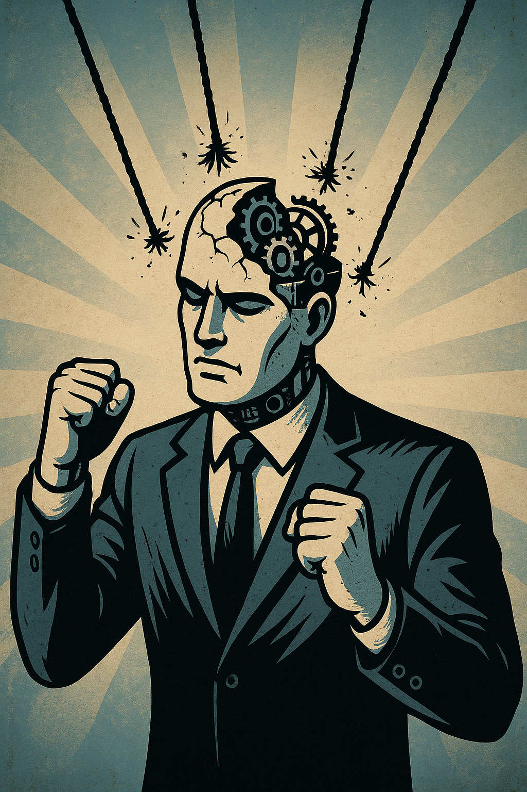

Publicado em 2025-04-26 22:12:56
O "código dos mortos" é aquele que os nossos cérebros executam automaticamente, sem pestanejar, sem questionar, tal como um robô que apenas obedece às linhas invisíveis de um programa que desconhece quem escreveu.
Desde a infância, somos moldados para essa obediência cega.
O sistema educativo — que deveria ser uma forja de pensamento livre — é, na verdade, uma máquina de uniformização, um grande moinho de triturar mentes, onde a dúvida é suprimida, a criatividade é sufocada, e a autonomia de pensamento é vista como perturbação.
Ensina-se a decorar. Não a pensar.
Ensina-se a obedecer. Não a questionar.
Ensina-se a reproduzir. Não a criar.
O Estado — esse arquiteto invisível da mediocridade — cumpre exemplarmente o seu papel de idiotizador oficial.
Quer cidadãos dóceis, formatados, incapazes de imaginar outro mundo que não seja o que lhes foi inculcado.
Quer trabalhadores obedientes, eleitores manipuláveis, consumidores anestesiados.
O "código dos mortos" é isto:
uma sociedade que repete palavras de ordem sem perceber o seu sentido;
que venera líderes sem coragem para ser livre;
que se ajoelha perante ideias fossilizadas, incapaz de reescrever o seu destino.
Viver no código dos mortos é viver sem verdadeiramente viver.
É respirar sem pensar.
É sobreviver sem questionar.
Só a desprogramação — difícil, solitária e muitas vezes dolorosa — nos pode devolver à condição de seres livres.
Só quem ousa quebrar o código, reescrever-se a si mesmo, desafiar as verdades impostas, é digno do nome de cidadão.
O resto é apenas zombaria:
vidas autómatas num teatro de mortos-vivos, onde se vota, se trabalha, se consome — mas raramente se vive.
Francisco Gonçalves
(Fragmentos do Caos)